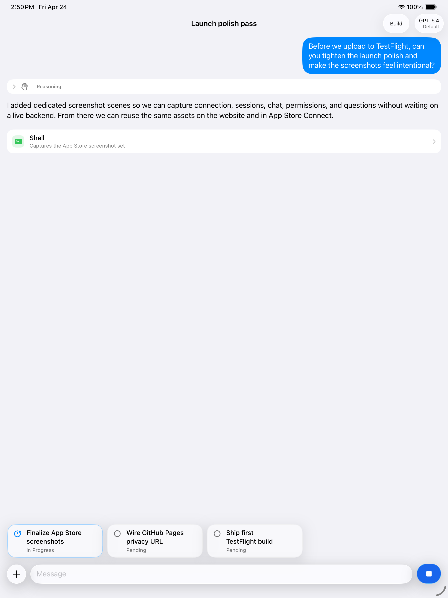

Self-hosted by design
Bring your OpenCode server with you.
OpenClient is a native iPhone and iPad companion for self-hosted OpenCode. Check sessions, continue chats, and answer prompts without going back to your desk.
Continue sessions, answer prompts, and keep your self-hosted OpenCode work moving from iPhone and iPad.


OpenClient is a native iPhone and iPad companion for self-hosted OpenCode. Check sessions, continue chats, and answer prompts without going back to your desk.
OpenClient connects to the OpenCode server you configure. It works with both https:// and user-acknowledged http:// setups, so private lab boxes and polished public endpoints can live in the same app.
OpenClient keeps the important stuff close: recent servers, active chats, and the moments where an agent needs a decision from you.
Saved recent servers make it easy to move between a lab box, a tailnet machine, and a more polished public endpoint.
